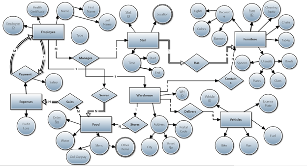
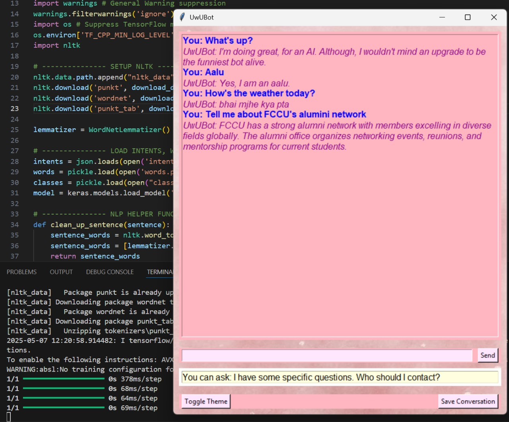
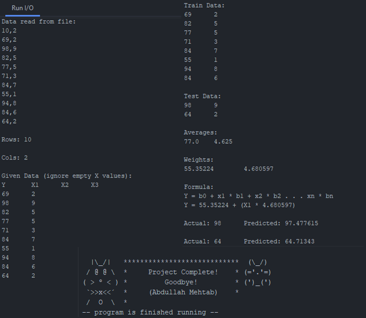
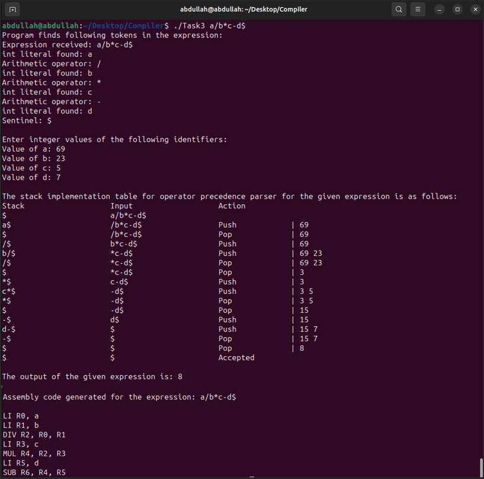
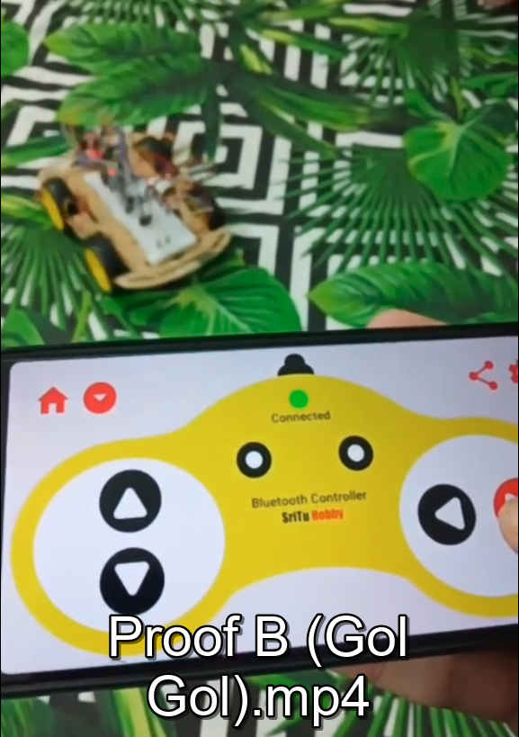
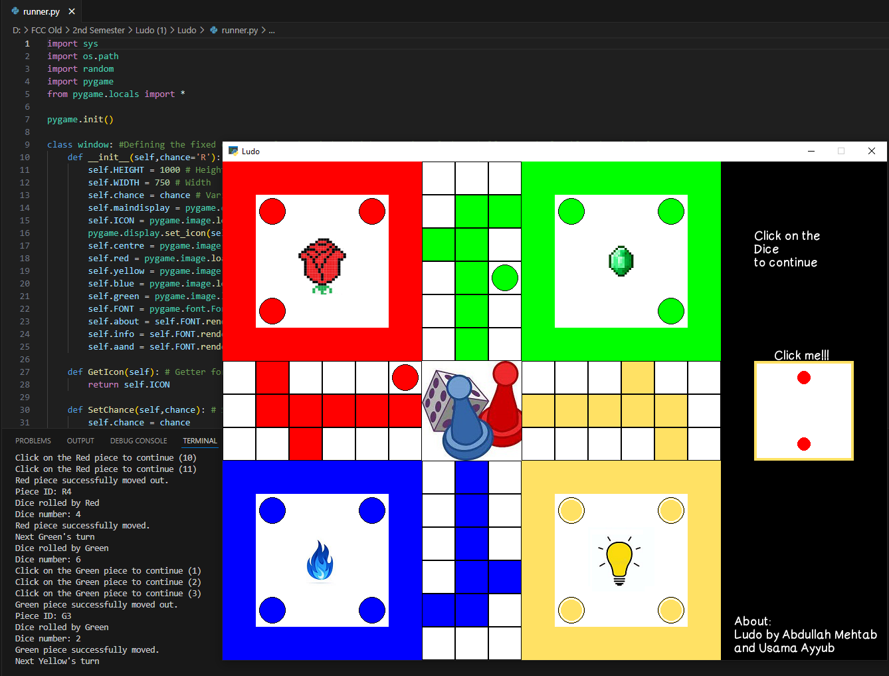

Cyber Sentinel - Security Monitoring SIEM
Low-cost open-source monitoring using Wazuh, ELK Stack, and Suricata IDS, with automated deployment, GUI management, and critical alerting for small-scale environments.
Work
This is not a trophy shelf. It is a map of what I have actually touched: security systems, backend demos, automation, ML, IoT, games, compilers, robots, and a few questionable repo names from earlier eras.
Low-cost open-source monitoring using Wazuh, ELK Stack, and Suricata IDS, with automated deployment, GUI management, and critical alerting for small-scale environments.
A planned/prototyped reporting tool that parses standardized JSON vulnerability data and produces formatted Word/PDF reports to reduce repetitive report-writing overhead.

Infrastructure and deployment practice using Terraform, Ansible, Docker, Jenkins, GitHub Actions, SonarQube, Prometheus, Grafana, and ELK-style observability thinking.

ESP32-based LED usage tracking into Google Sheets through a custom WebApp, combining embedded systems, cloud logging, and practical analytics.

A conversational assistant for university admissions queries, using Python and NLP-style query handling to help students find requirements and deadlines.
Model training and deployment practice around forecasting, exploratory analysis, feature engineering, model evaluation, and serving predictions through a lightweight app.
A backend-oriented e-commerce demo using Laravel, MySQL, Blade, routing, data modeling, and admin-style workflows.

Search prototype using indexing and retrieval concepts from data structures and algorithms coursework.

A low-level implementation of linear regression in MIPS Assembly. Did it need to exist? Maybe. Did it teach things? Absolutely.

A C-based parser/evaluator for arithmetic expressions, built around automata and compiler construction fundamentals.

Arduino-powered car controlled over Bluetooth, part embedded systems practice and part classic "make it move" joy.

Ludo, Space Invaders, 2048, Taxi Management, TensorFlow image recognition, line-following robots, and other projects that made the skill tree branch out.